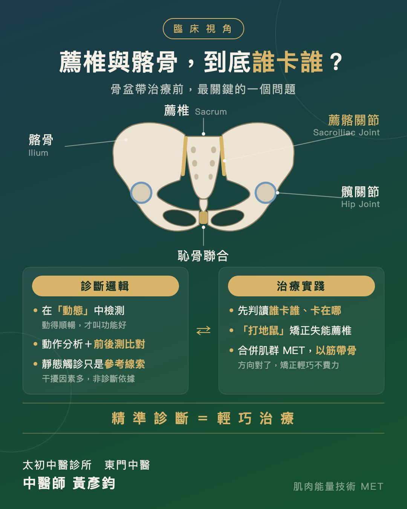
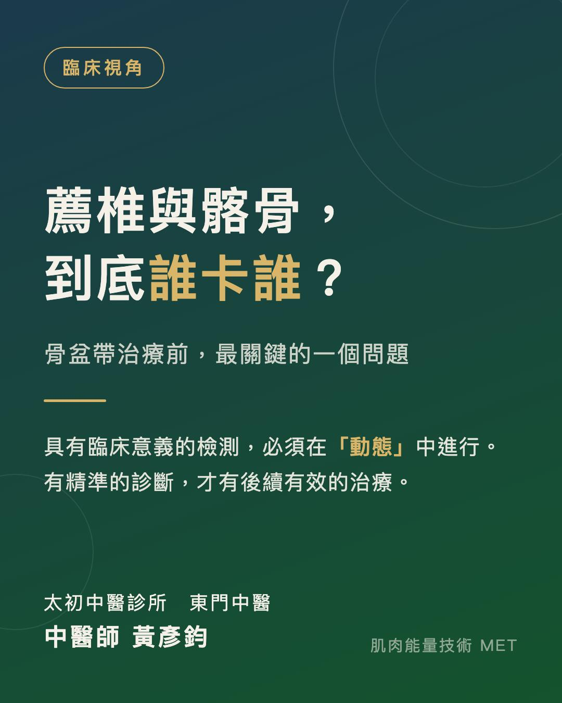

薦椎與髂骨，到底誰卡誰？骨盆帶治療前，最關鍵的一個問題
【薦椎與髂骨，到底誰卡誰？骨盆帶治療前，最關鍵的一個問題】
處理骨盆帶的疼痛與失能，我認為最重要的事，不是急著出手治療，而是先回答一個問題：
「薦椎與髂骨，到底是誰卡住誰？」
🧩 為什麼這題這麼難？
骨盆帶是人體最複雜、也最有趣的部位之一：兩塊髂骨加上一塊薦椎，透過恥骨聯合與薦髂關節相互咬合，再合併上髖關節，搭配錯綜複雜的生物力學連動——每次鑽研，都燒腦到一個很爽的地步。
也正因為結構環環相扣，薦椎失能的樣態非常多變。同樣是「骨盆卡住」，源頭可能完全不同；其中「單側失能」更是難中之難，坦白說，這一題我卡了很多年。
🔍 診斷，是治療的前提
上週傅士豪老師為中醫師們開設的「肌肉能量技術（Muscle Energy Technique, MET）」課程，正好直球對決這一題——MET 最初，就是為了處理骨盆帶而發展出來的技術。
傅老師的整理與教學功力，真的是太太太厲害！原本錯綜複雜的薦椎失能樣態，在老師的講解下變得清晰明瞭，連卡了我多年的單側失能，也終於被徹底解開。
課程中，老師特別強調一個核心觀念：具有臨床意義的檢測，必須在「動態」中進行。
因為人是會動的個體，要動得順暢，才代表擁有好的功能；而靜態的觸診評估，牽涉了太多干擾因素，只能作為參考線索，不能當成診斷依據。也因此，整套診斷邏輯都圍繞著動作分析與前後測比對，一步步判讀出骨盆帶的關節失能關係——有精準的診斷，才有後續有效的治療。
🎯 診斷清楚了，治療就輕巧了
這幾天在門診，光是薦椎失能這一個主題，透過傅老師的加持灌頂，就能快速抓出薦椎與髂骨「誰卡誰，然後卡在哪」。
一旦方向明確，治療反而是最簡單的一步：用很簡單的「打地鼠」手法，就能矯正失能的薦椎；再合併其他肌群的 MET 手法，以「以筋帶骨」的方式輕巧矯正整個骨盆帶——完全不費力。
費力，往往是因為沒診斷清楚；輕巧，來自於方向正確。
🌱 一路走來的養分
會對這一題如此著迷，要從學生時代南下台南學傷科說起(以下省略三千字)。幾年前又因緣際會，參加了 John Gibbons 來台開設的骨盆帶課程，開啟了我徒手傷科的新眼界：不再只是傳統骨傷科的手感與經驗，更加入解剖學、肌動學、生物力學的分析與判斷。這次能請到傅老師開課，用更完整、更系統性、更細緻地再學一次，真的是上輩子燒好香。
越是複雜的結構，越需要清晰的診斷邏輯。在動態中檢測、踩穩解剖與生物力學的地基，複雜的骨盆帶，也能拆解得明明白白。
太初中醫診所 東門中醫
中醫師 黃彥鈞
#骨盆帶 #薦椎失能 #薦髂關節 #肌肉能量技術 #MET #中醫徒手 #徒手治療 #診斷先於治療

